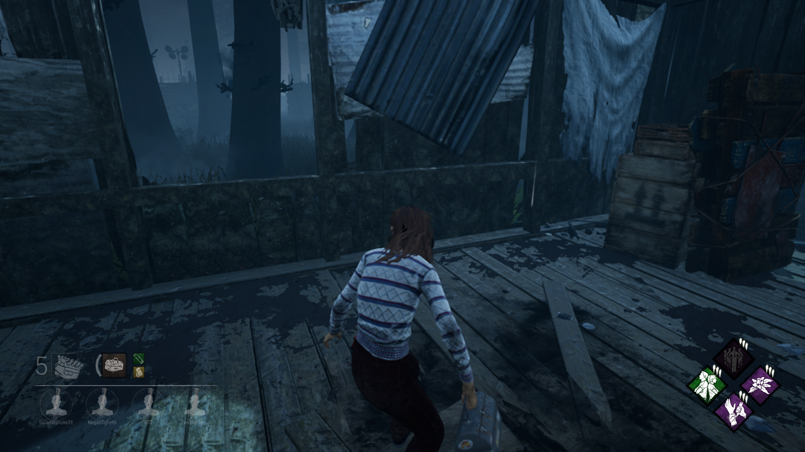

Hello!
Greetings to whoever accesses this page. You're probably here because Dead by Daylight is not being so kind to beginners. Don't worry! I am here to teach you the basic and how to improve!
The sides
Dead by Daylight is a asymmectrical multiplayer game. Meaning that there are two side. Those sides consist of...
- The Survivor (4 players)
- The Hunter (1 player)
The goals
- The Survivors
- The common goal of the survivors is to escape the map. By doing that they must repair 5 generators in order to escape.
- The Hunter
- The goal of the killer is to prevent the survivors from escaping by making sure they dont complete the 5 gens by any means necessary.
Perspectives
Let's talk about the perspectives for a moment because this is very important.
- The Survivors
- The survivors have a third person perspective. They can see more than the hunter by being able to look over certain objects than the hunter. Which can be a huge advantage. 
- The Hunter
- The hunter has a first person persepctive. This can be very tricky since the killer cannot see as much as the survivors can.

Currency
There is currency and they consist of...
- Bloodpoints - Used for buying items and perks in the bloodweb (Obtained by playing the game)
- Iridecent Shards - Used for getting characters in game or to buy cosmetics for the characters (Obtained by leveling up)
- Auric Cells - Similar to the shards, you can only obtain these by paying real money.
Leveling system
In Dead by Daylight, the survivors and the hunter have a level. Starting at rank 20 (lowest) and going all the way down to rank 1 (highest). (Note: Every 13th of each month, your rank will reset and go back a couple of ranks just to keep the flow going.)
To level up, you need to do well as a player in each match. You will be scored based on your proformance and the emblems will decide if you earned it or not. There are 5 levels to a emblem.
- Iridescent
- Gold
- Silver
- Bronze
- Nothing
In survivors you will be scored on...
| Lightbringer | Unbroken | Benevolent | Evader |
| finish generators, cleanse totems, and distract the hunter | The goal is to stay alive as long as possible. Escaping the trial without being down will give Iridescent, gold if you escape but got downed,Silver and downwards if you die (depends on the amount of time you have been alive before being dying) | Gained by healing and unhooking other surviors. There are alot of variables that go into this, but the main point of it is to help other survivors whenever they are in danger. | This emblem is all about getting chased by the hunter and escaping him. You get rewarded for being chased and escaping. However, if you lose the chase, you lose points. |
For the hunter, you will be scored on...
| Gatekeeper | Devout | Malicious | Chaser |
| To get this, you must keep the generators from being repaired. The longer, the better score. | To get this, you must eliminate the survivors by any means necessary. Whatever takes them out of the trial faster, the better. | To get this, you must hit surviors and apply pressure to them without them healing. The less healing, the better. | To get this, you need to find and chase surviors. The shorter the chase, the better score you will get. |
Auras
Auras in the game are what reveal positions of both survivors and the hunter. There are specific perks that can do this for each side. Since there are alot of deteaction perks. I will leave a link to all the perks in the game that include exposing auras.
The Bloodweb
The bloodweb is where you can obtain items, add-ons, perks, and sharable perks from each survivor and hunter.